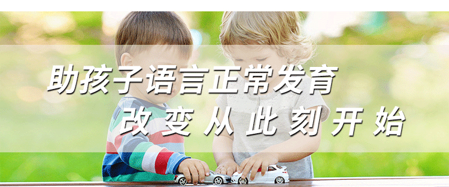

点击复制微信添加指导老师 抢占指导名额
点击复制微信
宝宝语言能力自测
1.您孩子的年龄是?
8-12个月
12-24个月
24-36个月
36个月以上
2.孩子第一次冒话年龄是?
6-12个月
1-2岁
2岁以上
3.孩子目前语言的掌握情况是?
没有语言
1-2简单叠词或词汇
3字以上词汇
5-6字小短句
4.孩子能否准确明白大人的指令?
能
否
一般
5.孩子是否表现出说不出来就用动作表达需求的
情况?
很少
经常
6.孩子目前的家庭语言环境是怎样的?
单一普通话
单一方言
多种语言混合
其他
7.家人是否不等孩子开口就满足TA的需求?
是
不是
8.孩子目前存在的问题是?
语言迟缓
不会说话
词汇量少
理解力差
吐字不清
说话慢
9.您是否确定宝宝以上情况基本属实?
是
否
不确定
点击复制微信添加指导老师 获取自测结果
点击复制微信

安全加微信
前往微信添加
微信号：
↑点击复制即可去微信搜索添加↑
去微信
立即添加微信即可咨询
点击复制微信 添加指导老师
点击复制微信